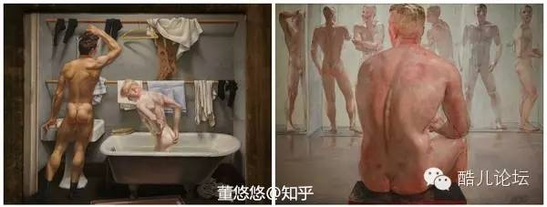
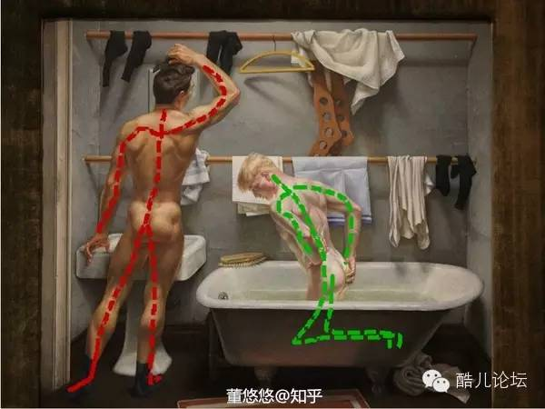
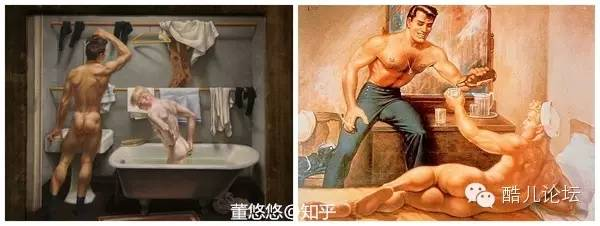
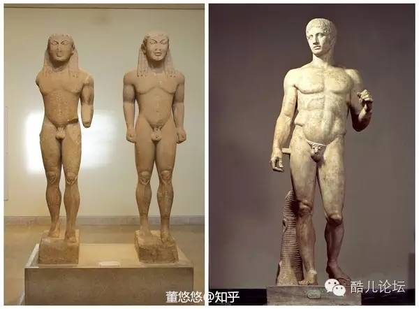
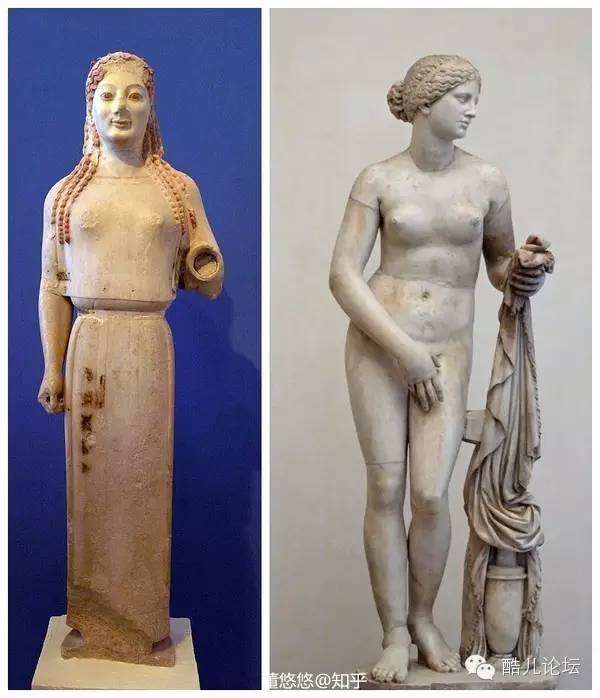
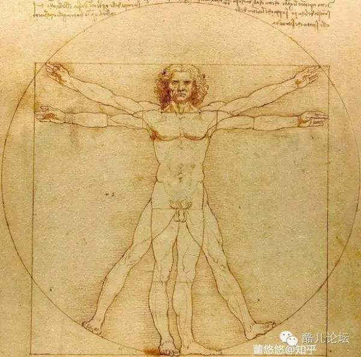
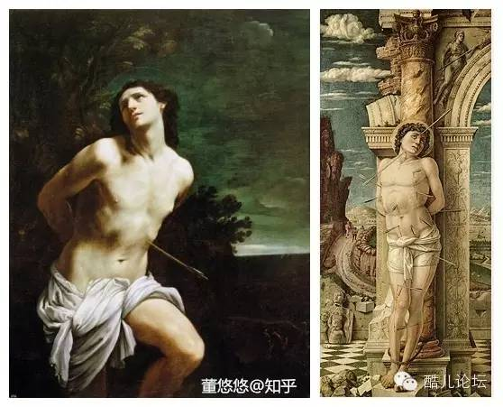

如何看出他们捡过肥皂？
Paul Cadmus, Bath, 1951, Whitney Museum of American Art , NY
看到这幅画的时候，我脱口而出：“看，捡肥皂！”
同行的朋友一脸鄙视地说：“人家这个不就是正常洗澡？”
我一脸骄傲地回应：“你没看出来这俩人捡过肥皂，而且是事后嘛？”
“我怎么看不出来？”
这里给同学们30秒到达战场的思考时间~~~~~~~~~~~~~~~~~~~~~~~~~~~~~~~~~~~~~
想必看到这里，同学们发觉气氛不太对了，但是问题具体出现在哪呢？我们来看：

首先，与右边的公共浴室相比，这里是一个封闭的私人浴室。两位男性在这封闭的空间中，虽然没有眼神交流，和互动，但都没有呈现出尴尬的神情，可以表明两者的情侣关系。与右侧开放的浴室相比，男性若不是在独自认真洗澡，就是与其他人调侃打趣。

其次，两者的情侣关系中的依附地位是怎么样的呢？细看，左边那位整个人身体极为舒展，对镜整理着发型，我隐约都听到了他的口哨声，展现出一种王者的霸气。 相对于左边那位，右边这位男子则沉静柔弱些，他跪在浴缸里，作臣服状，若有所思地涂着肥皂。他们相对的位置，向我们暗示了他们在这段关系里的角色和地位。

最后，肯定有人要问，为什么是事后啊？这还用说嘛，与事前，事中的急急火火相比，这幅画表现出的是一种贤者般的宁静。
那么问题还是来了，男性裸体从最开始表现和谐理性美占主导的强健运动形象、英雄形象，什么时候变成了当代情色感十足的同性恋形象呢？
很多人觉得西方艺术不就是充斥着白花花的屁屁，裸男裸女，其实每个时期的裸体都有不同的含义，裸男和裸女又有些不同，乘机梳理下。

事情的开始在古希腊，裸体第一次被当做艺术主题，更确切的说应该是男性裸体。Kouroi（年轻男性雕像）（左上） 呈现了古风时期（公园前八世纪到公元前480年）完美无缺的男性形象，宛若神邸的美，在古典时期成为完美的模型。直到古希腊雕塑家Polykleitos，在大约公元前440年左右，他的雕塑Doryphoros（右上）定义了人体各部分比例的标准。

这个标准横跨了千年。在艺术作品中，男人成为了人类的象征，相反，女性的裸体则给人少了些许天然质朴感，因为女性裸体更具有性暗示。就像古风时期，跟Kourai同一时期，女性雕像Kore（左上）则是披着床单。要等到公元前340年左右，古希腊雕塑家Praxiteles创作了爱神 Aphrodite of Cnidus（右上） ,才出现了古希腊第一座裸体女性雕像，这座雕像，女神依旧有些羞涩地用手盖住了她的关键部位。
古希腊时期，有个不成文的规定， 男性的裸体被认为是光荣的，完美的，圣神的，然而女性裸体则被定义为私密的、隐私的、放肆的、情色的。
中世纪是莫有啥裸体的。
古希腊的信条在文艺复兴初期得到重审。基督教认为女性裸体更像是恶魔在人类的工具。而男性的裸体则再一次被认为是人类的象征。达芬奇的维鲁特人（下图）就可以证明这一点。维鲁特人展示: 完美的男性身体被证实，一旦他四肢舒展，就能嵌入完美的形中，如圆形，和矩形。而达芬奇所认为的女性的代表则是相反的，他认为女性裸体应是羞涩的，小腿紧贴，手臂合拢，头微低并歪像另一边。

即使在法国，被认为对裸体无所谓的地方，1648年在巴黎创立的皇家学院，课上只有男模。直到1863，才出现女模。
当然，从十六世纪开始，裸女经常出现在钟爱女性身体的威尼斯画派画家的私人工作室中，之后有鲁本斯、 布歇、弗拉格纳尔（Fragonard），到再后来的印象派裸女模特都是他们画室的常客。在18世纪末，新古典主义提倡回到古希腊审美，如古希腊时期，男性裸体再次出现。

但是到了19世纪，男性裸体渐渐地在失去他几个世纪以来的圣神感，理性美，慢慢地走向情色。事实上，米开朗基罗，卡拉瓦乔，圭多 雷尼（左上圣塞巴斯蒂安），这些艺术界有名的爱男人的男人作品中，已经可以感受到属于男性身体所散发出的性感。自文艺复兴起，基督教就把以圣塞巴斯蒂安为题作品(上图)定为违禁品，因为这似乎成了男性情色画的首选主题（好像可以写个宗教主题色情画）。直到19世纪末甚至是20世纪，男性裸体才真正与男同性恋题材联系在一起。如本文刚开始的那幅捡肥皂。
----------------------------------------------------
酷儿论坛
致力于为杭州学生同志群体营造一个多元、健康、平等的环境，促进自我认同和社会认可
我们在此也呼吁大家为论坛捐款，所用款项将用于日常活动、论坛运营和杭州同志中心！~